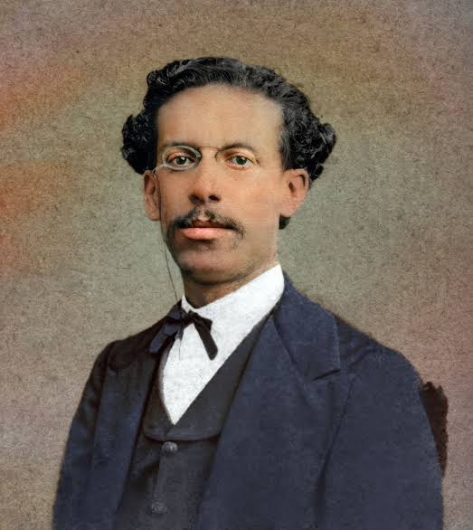
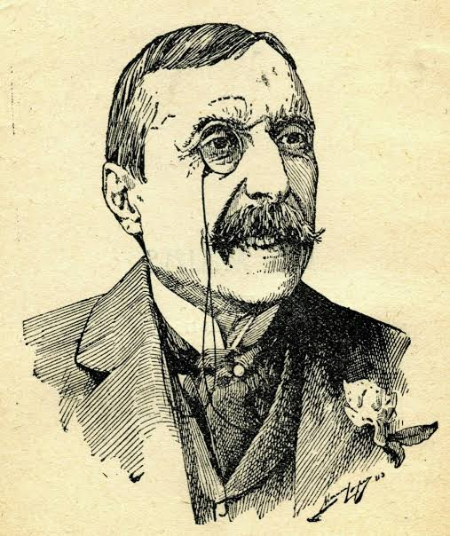
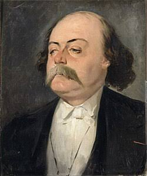
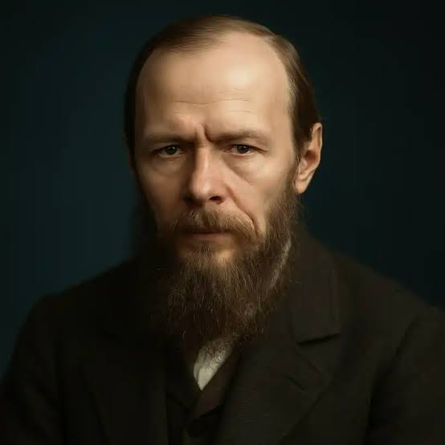

Machado de Assis
Maior nome da literatura brasileira, autor de obras-primas como Memórias Póstumas de Brás Cubas e Dom Casmurro.

Maior nome da literatura brasileira, autor de obras-primas como Memórias Póstumas de Brás Cubas e Dom Casmurro.

Principal expoente do Realismo em Portugal, famoso por romances de crítica social como O Primo Basílio e Os Maias.

Escritor francês precursor do movimento com a publicação do aclamado romance Madame Bovary.

Mestre do Realismo psicológico russo, autor de obras fundamentais como Crime e Castigo.
O Realismo surgiu na Europa na segunda metade do século XIX em oposição ao sentimentalismo romântico, impulsionado pelas transformações científicas, pela industrialização e pelas novas teorias filosóficas da época.
No Brasil, o marco inicial ocorreu em 1881 com a publicação de Memórias Póstumas de Brás Cubas, de Machado de Assis. O movimento destaca-se pelo retrato fiel da sociedade burguesa, pela denúncia do casamento por interesse e pela profunda investigação do comportamento humano.